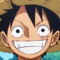
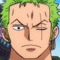
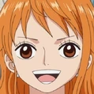
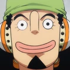
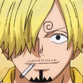
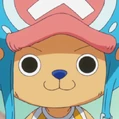
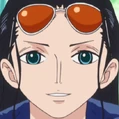
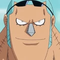
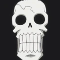
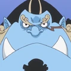

One piece
Risada do Luffy
Quem são os chapéus de palha:
Os Piratas do Chapéu de Palha são liderados por Monkey D. Luffy e são conhecidos por sua lealdade, força e diversidade de habilidades.
O nome vem do icônico chapéu de palha que Luffy recebeu de Shanks, o Ruivo. A tripulação é composta pelos seguintes membros principais:
Esse é o bando do luffy:
- Monkey D. Luffy:
- Busca se tornar o Rei dos Piratas
- Roronoa Zoro:
- Sonha em ser o melhor espadachim do mundo
- Usopp:
- Conhecido por suas histórias e coragem, filho de Yasopp
- Vinsmoke Sanji:
- Busca encontrar o All Blue
- Tony Tony Chopper:
- Capaz de se transformar em humano
- Nami:
- Deseja criar o mapa completo do mundo
- Nico Robin:
- Busca descobrir a verdadeira história do mundo
- Franky:
- Responsável pela construção e manutenção do navio
- Brook:
- Possui poderes da Yomi Yomi no Mi
- Jinbe:
- Mestre em Fish-Man Karate
Habilidades

- Monkey D. Luffy
- Gomu Gomu no Mi/Hito Hito no Mi Modelo: Nika (Despertada)
- Todas as três formas de Haki (Avançado)
- Resistência a veneno
- Voz de Todas as Coisas
- Estilo de luta livre

- Roronoa Zoro
- Esgrima:
- Estilo de Três Espadas
- Estilo de Três Espadas do Rei do Inferno
- Estilo de Duas Espadas
- Estilo de Uma Espada
- Estilo de Nove Espadas
- Estilo Sem Espada
- Estilo Fogo de Raposa
- Todas as três formas de Haki (Haoshoku Haki avançado)

- Nami
- Cartógrafa
- Arte do Tempo
- Sorcery Clima-Tact
- Zeus
- Lutadora de bastão

- Usopp
- Arsenal de Armas
- Kuro Kabuto
- Munições Pop Green
- Inventor de Armas
- Kenbunshoku Haki

- Sanji
- Especialista em Culinária
- Estilo Perna Negra:
- Kenbunshoku & Busoshoku Haki
- Humano Modificado
- Culinária do Reino Kamabakka

- Tony Tony Chopper
- Hito Hito no Mi
- Inventor de fármacos, medicamentos e vírus
- Capacidade de conversar com animais
- Combatente corpo a corpo

- Nico Robin
- Hana Hana no Mi
- Karatê Homem-Peixe
- Leitura de Poneglyphs
- Assassinato

- Franky
- Modificações de Ciborgue
- Construção de navios e veículos
- Arsenal de Battle Frankies
- Franky Shogun
- Esgrima Franken
- Pugilista
- Tecnologia de laser

- Brook
- Soul Solid
- Yomi Yomi no Mi
- Combate usando música
- Corpo de esqueleto
- Ex-membro de guarda real

- Jinbe
- Atributos de Homem-Peixe
- Comunicação com a vida marinha
- Ex-membro de guarda real
- Karatê Homem-Peixe
- Jujutsu Homem-Peixe
- Busoshoku & Kenbunshoku Haki
luffy Cantando
Risada mais conhecida do Anime:
Crocodile